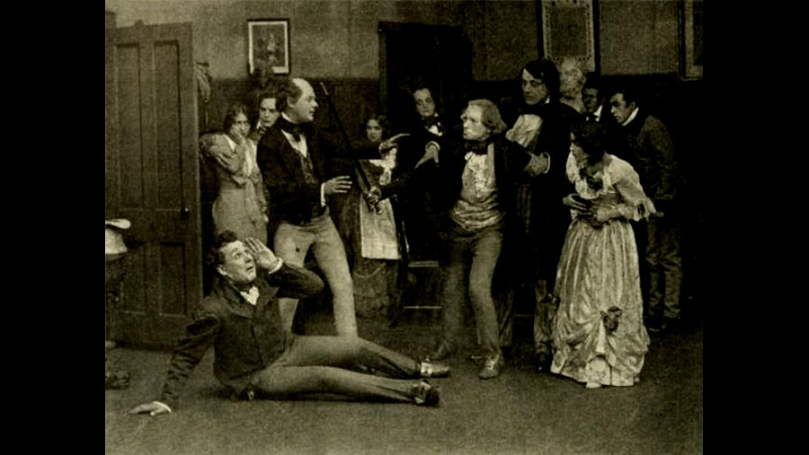

1912

CAST
Mary Graham
-
Bessie Learn
Seth Pecksniff
-
Charles Ogle
Old Martin Chuzzlewit
-
William West
Charity Pecksniff
-
Elizabeth Miller
Mercy Pecksniff
-
Mary Fuller
Tom Pinch
-
Harold M. Shaw
Mrs. Lupin
-
Marion Brooks
Mark Tapley
-
Bigelow Cooper
John Westlock
-
Frank Sylvester
Tigg Montague / Montague Tigg
-
Marc McDermott
Anthony Chuzzlewit
-
John Sturgeon
Jonas Chuzzlewit
-
Guy Hedlund
Young Martin Chuzzlewit
-
George Lessey
Mr. Chuffey
-
Edward Boulden
Nadgett, a detective
-
J. Charles Haydon
Ruth Pinch
-
Bliss Milford
Oswald Fips, a solicitor
-
Robert Brower
CREATIVE TEAM
Director
-
Oscar Apfel
Screenplay
-
J. Searle Dawley